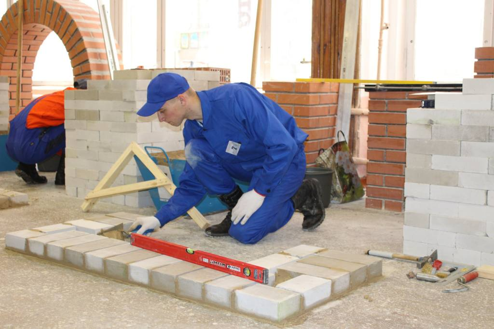
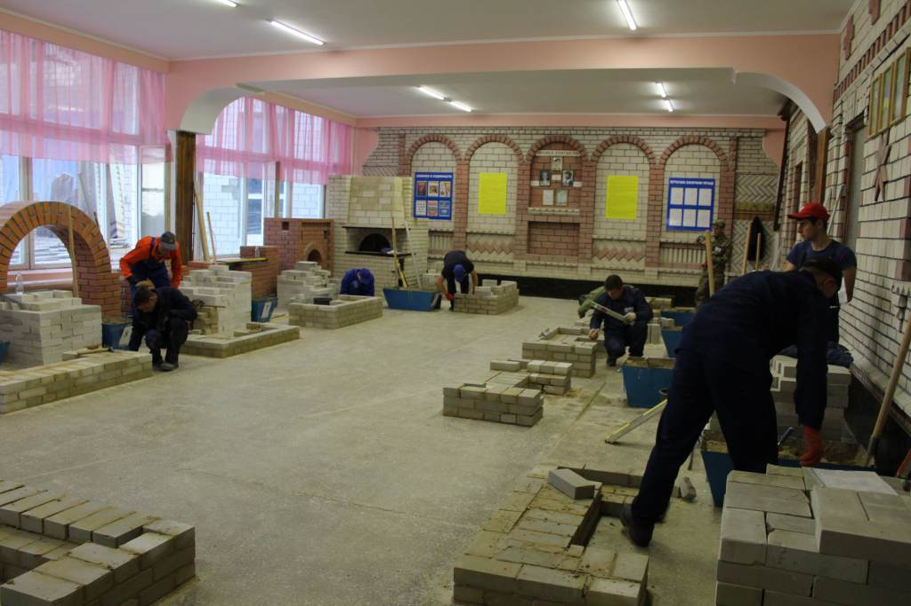

Му́ляр
Му́ляр — будівельний робітник, який виконує роботи з мурування або ремонту конструкцій зі штучних і природних будівельних матеріалів. Мулярами зводяться цегляні житлові будинки, промислові комплекси, гідротехнічні споруди і мости. Поява монолітних каркасів, зміна технічних засобів зведення будівель не витіснили мурування. Досі професія муляра є одною з найбільш затребуваних на ринку праці. Поряд зі звичайним муляром, існує ще професія муляра-монтажника. Він здійснює не тільки мурування, а й установлення залізобетоних перекрить, дахів, збірних конструкцій.
Пічник
Пічник -якщо буде потрібно скласти піч або кімнатний камін потрібні послуги пічника. Хороший пічник в сучасних умовах стає рідкістю, хоча затребуваність в його послугах постійно зростає. Про це свідчать оголошення в різних інформаційних джерелах.Досвідченого шановного майстра відрізняє бездоганне знання особливостей безлічі різновидів печей. Він працює неспішно, грунтовно і завжди якісно.
До особливостей професії пічника відноситься і той факт, що практично у всіх регіонах його робота носить сезонний характер, оскільки взимку печі не викладаються.
Досвідчений пічник може працювати один, але при необхідності бере помічника, щоб процес пройшов швидше.
Вся робота по викладанню печі ведеться майстром власноруч. Виходячи її складності і відповідальності, потрібно відзначити, якими особистісними якостями володіє професіонал:
• спокійний, врівноважений характер;
• вимогливість до себе і до помічникам;
• старанність;
• розвинене почуття власної гідності;
• тверезий спосіб життя;
• відповідальність;
• Ввічливість.

Штукату́р або тинька́р
Штукату́р або тинька́р — будівельна професія, спеціаліст з лицювання фасадних і внутрішніх стін будинків спеціальними сумішами (цементно-піщаними, гіпсовими, тощо). Штукатурні роботи належать до великої групи обробних робіт, а професія штукатура займає особливе і дуже помітне місце серед інших будівельних професій. Робота штукатура полягає у виконанні вирівнювального або декоративного шару розчину (штукатурки або тиньку) на поверхнях стін, стель та інших конструкцій — штукатуренні (тинькуванні). Штукатурять поверхні як всередині приміщень так і на фасадах. Штукатур готує поверхню до опорядження, готує розчин, наносить його вручну або механізованим способом на поверхню, розрівнює і затирає.

 Галерея
Галерея
.png)